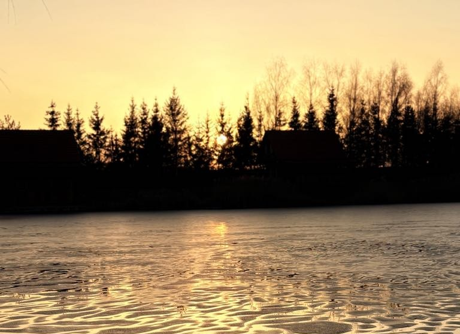
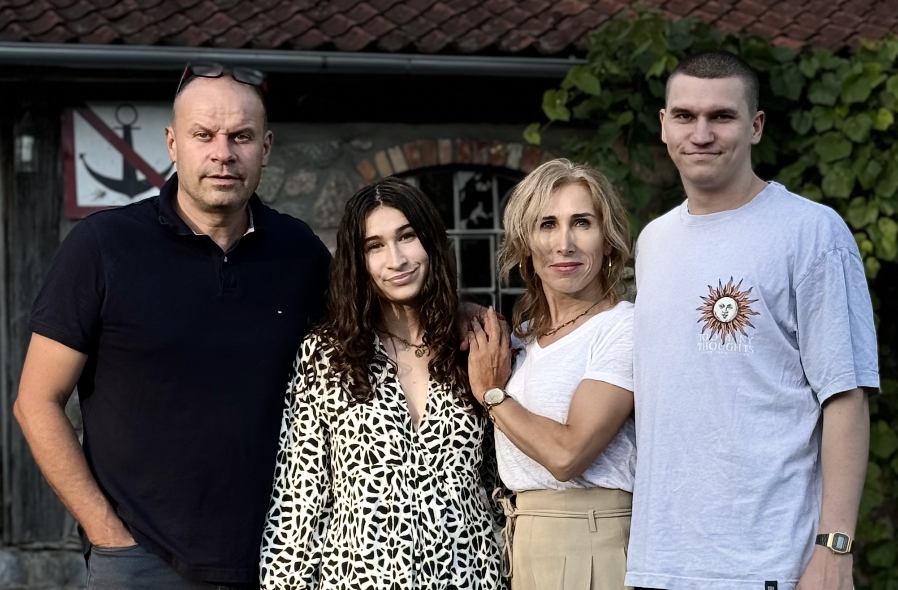

Oferta 01
Konradowe Chaty
Dwupoziomowe domki 70 m² z tarasem i dostępem do wody.
- 2 sypialnie + sofa (do 6 osób)
- Kominek i pełny aneks kuchenny
- Zadaszony taras nad wodą
- Kajaki i rowery
- Pies mile widziany

Kukowo · Mazury · Polska
Klimatyczne siedlisko w Kukowie — domki z kominkiem, studia w starej stajni i kamperowisko. Tam, gdzie cisza jest prawdziwa.
Siedlisko z duszą
Konradówka to spokojne siedlisko w Kukowie, kilka kilometrów od Olecka. Stare drewno, własny staw z pomostem, bezpośredni dostęp do wody.
Trzy rodzaje noclegu w jednym miejscu: drewniane domki z kominkiem, klimatyczne studia w odrestaurowanej stajni i kamperowisko z prądem.
Zobacz ofertyDomki z tarasem i dostępem do wody.
Drewniane domki, klimatyczna stara stajnia.
Z dala od kurortów. W nocy słyszysz las.
Wydzielone miejsca z prądem 230V.

Gospodarz
Siedlisko Konradówka to moje życie. Budowałem je kawałek po kawałku, z myślą o ludziach, którzy potrzebują prawdziwego odpoczynku — nie kolejnego hotelu.
Kukowo to mała wieś na Mazurach Garbatych. Pola maków i chabrów, lasy, trzy własne stawy, cisza o świcie. To miejsce, gdzie kończy się asfalt — i zaczyna spokój.
Każdy gość dostaje mój numer telefonu. Pytanie o termin, o atrakcje w okolicy, o to gdzie najlepiej łowić — odpiszę lub oddzwonię. Tak działam.
„Wyjątkowy gospodarz tworzy wyjątkowe miejsce." — opinie gości, Google Maps
Co oferujemy
Oferta 01
Dwupoziomowe domki 70 m² z tarasem i dostępem do wody.

Oferta 02
Stylowe apartamenty w odrestaurowanej stajni.

Oferta 03
Twoje miejsce na Mazurach z prądem 230V.
Dlaczego warto
Las w zasięgu wzroku, staw za oknem, jezioro 5 minut spacerem.
Domek z kominkiem, studio, miejsce dla kampera. Wybierasz pod siebie.
Z dala od głośnych ośrodków. W nocy: las, wiatr w drzewach.
Brak dopłat-zaskoczeń, brak ograniczeń. Przestrzeń dla psa, której nie miał w mieście.
Bez prowizji Booking.com. Telefon do właściciela, indywidualna wycena.
Znajdź się
Każdy znajdzie tu swoje miejsce. Dosłownie — 8 hektarów to dużo przestrzeni.
Stylowe studia w Starej Stajni, domki z kominkiem, lampiony po zmroku. Cisza, która pozwala się skupić na sobie. Bez animatora i sąsiadów.
Studia w Stajni →Ogrodzony teren, trampoliny, trzy stawy z pomostami. Bezpieczna przestrzeń, gdzie dzieci biegają godzinami, a dorośli wreszcie odpoczywają.
Konradowe Chaty →Trzy własne stawy pełne ryb. Wędkowanie z pomostu, z tarasu domku lub z kajaka. Cisza i wschód słońca nad wodą — lepiej się nie da.
Atrakcje w siedlisku →Prąd 230V przy każdym stanowisku, woda, sanitariaty. Spokojne, zielone miejsce z dala od przepełnionych parkingów. Pies gratis.
Kamperowisko →Kajaki i rowery w cenie. Trasy przez Mazury Garbate i Suwalszczyznę zaczynają się za bramą. Wiadukty Stańczyki, Jezioro Hańcza, Wigry.
Atrakcje okolicy →Kilka domków, wspólne ognisko, grillowanie, hamaki. Dość miejsca żeby być razem i żeby mieć własną przestrzeń. Idealne na rozjazdówkę.
Zarezerwuj dla grupy →Jak do nas trafić
Konradówka to Kukowo 33A, gmina Olecko, 5 minut autem od centrum Olecka.
PKP Olecko · ~6 km
Szczytno-Szymany (SZY) · 110 km · ~1h45
Warszawa Modlin (WMI) · 240 km · ~3h
Olecko · ~6 km
Ełk · ~30 km
Wiadukty Stańczyki · ~25 km · 30 min
Gołdap · ~42 km
Augustów · ~45 km
Jezioro Hańcza · ~45 km · 50 min
Suwałki · ~48 km
Wigierski Park Narodowy · ~50 km · 1h
Suwalski Park Krajobrazowy · ~55 km
Giżycko · ~63 km
Z naszego Instagrama
Codzienne kadry z siedliska — pory roku, goście, zwierzęta, kuchnia, ognisko. Zaobserwuj nas, żeby być na bieżąco.
★★★★★„Teren jest rozległy, wokół las, cisza i spokój. Nawet gdy jest sporo gości, zupełnie nie jest to odczuwalne — każdy znajduje przestrzeń dla siebie."
★★★★★„Wspaniałe miejsce. Bardzo mili i przyjaźni gospodarze. Stworzyli wyjątkowe miejsce o specyficznym klimacie — masa domków w starym stylu, obok mały i duży staw, kajak, ryby. Każdy znajdzie coś dla siebie."
★★★★★„Wspaniałe miejsce na odpoczynek we dwoje — piękne okoliczności przyrody, zadbane i urocze domki, przemili właściciele. Siedlisko oferuje prywatność, która pozwala skutecząć odpocząć."
Masz pytania?
Pobyt ze zwierzęciem ustalamy zawsze indywidualnie. Napisz nam o swoim pupilu w formularzu zapytania, a wspólnie zadecydujemy.
Zameldowanie od 15:00, wymeldowanie do 11:00. Spotykamy się osobiście, pokazujemy obiekt i opowiadamy o okolicy. Późniejsze zameldowanie ustalimy telefonicznie.
Tak. Każdy domek ma kominek oraz ogrzewanie elektryczne. W niskim sezonie (październik–kwiecień) drewno do kominka jest w cenie. To najbardziej klimatyczna pora roku na pobyt u nas.
Wi-Fi działa w chatach i w stajni. Zasięg 4G stabilny u wszystkich głównych operatorów. Pracujesz zdalnie? Bez problemu.
Przyjedź do nas
Rezerwacje bezpośrednie — bez prowizji, z pełną uwagą właściciela.
Telefon
+48 604 083 659Godziny zameldowania
15:00 — wymeldowanie do 11:00